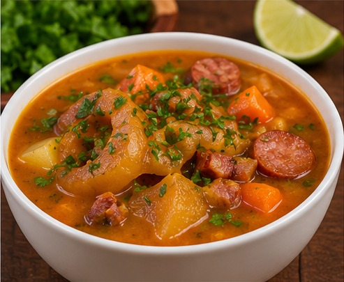
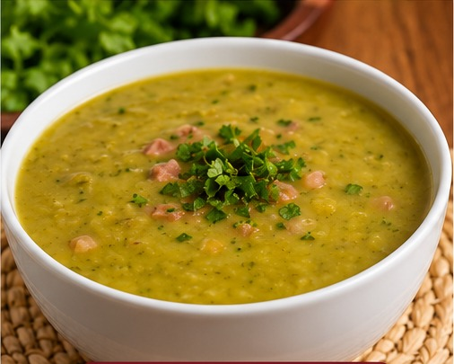
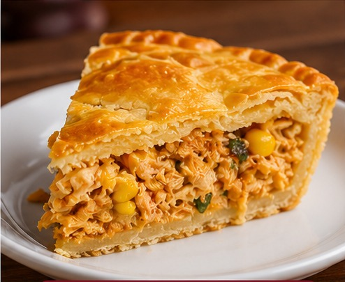
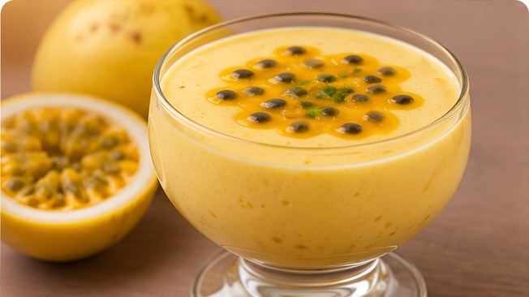
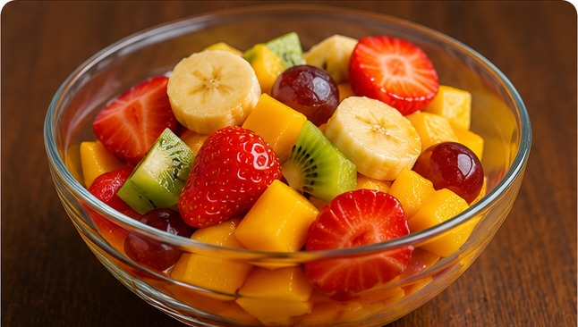

Cardápio acessível
Um cardápio acessível deve apresentar informações claras e completas sobre os alimentos. Todas as pessoas devem conseguir consultar os pratos, conhecer os ingredientes e escolher o que desejam consumir com autonomia.
Exemplos: o que fazer e o que evitar
Exemplo incorreto
Imagine um restaurante que apresenta seu cardápio somente por meio de uma fotografia, sem disponibilizar as informações em texto.
Por que isso é um problema?
- O leitor de tela não consegue identificar os ingredientes apenas pela fotografia.
- Se o preço estiver escrito somente dentro da imagem, a pessoa cega poderá não conseguir consultá-lo.
- A pessoa pode depender de outra pessoa para conhecer as opções.
Exemplo correto
O estabelecimento apresenta o nome do prato, uma descrição dos ingredientes e o preço em texto. A fotografia também possui uma descrição alternativa.
Exemplo: Caldo de mocotó. Caldo encorpado preparado com mocotó bovino, linguiça, bacon, batata, cenoura e temperos. Preço: R$ 20,00.
Conheça nosso cardápio
Pratos principais
Caldo de mocotó

Caldo encorpado preparado com mocotó bovino, linguiça, bacon, batata, cenoura e temperos.
Preço: R$ 20,00.
Sopa de ervilha

Sopa cremosa preparada com ervilha, temperos e ingredientes selecionados.
Preço: R$ 16,00.
Empadão de frango

Massa macia e dourada com recheio de frango desfiado e temperado.
Preço: R$ 22,00.
Sobremesas
Mousse de maracujá

Sobremesa cremosa com sabor de maracujá.
Preço: R$ 12,00.
Salada de frutas

Combinação de frutas frescas da estação.
Preço: R$ 10,00.
O que um cardápio acessível precisa oferecer?
- Nome dos alimentos em texto.
- Descrição dos ingredientes.
- Preços apresentados de forma clara.
- Informações sobre possíveis alergênicos.
- Imagens com descrição alternativa.
- Arquivos digitais compatíveis com leitores de tela.
- Navegação pelo teclado.
Inclusão começa com informação
A acessibilidade permite que pessoas com e sem deficiência tenham mais autonomia para escolher seus alimentos. Um cardápio bem organizado é uma forma de respeito, inclusão e cidadania.